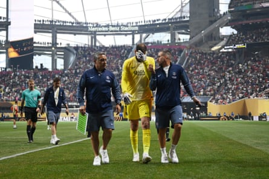

Bayern Munich’s coach, Vincent Kompany, said that he felt his blood boil after seeing Jamal Musiala taken off on a stretcher during Bayern Munich’s 2-0 defeat to Paris St-Germain in the quarter-final of the Club World Cup. Musiala’s left ankle appeared to be dislocated following a challenge from Gianluigi Donnarumma just before half-time in Atlanta, with players from both teams covering their faces and looking away, clearly affected by what they had seen.
The Bayern Munich coach called the injury an “accident,” but the goalkeeper Manuel Neuer criticised Donnarumma’s challenge and the club’s sporting director, Max Eberl, said that the PSG goalkeeper had not taken sufficient care.
Supporters inside the Mercedes-Benz Stadium booed the PSG goalkeeper in the second half. When the incident happened, Donnarumma had crouched down on his goalline, seemingly close to tears. At one point, he covered his face with his shirt. At half-time, he did not immediately go down the tunnel. Instead, he went towards Musiala and appeared to talk to some Bayern players, although he eventually turned back in the other direction.
A goal from Désiré Doué gave PSG a 1-0 lead with 11 minutes of normal time remaining of an intense and open game before PSG had two men sent off: Willian Pacho departed with eight minutes left and then Lucas Hernández was shown a red card after seeming to elbow Raphaël Guerreiro after 92 minutes. But with Bayern pressing, PSG broke away for Ousmane Dembélé to secure the victory. However, a superb game had been soured by Musiala’s injury.
Gianluigi Donnarumma looks devastated as he leaves the pitch at half-time following an injury to Bayern’s Jamal Musiala.Photograph: Shaun Botterill/FIFA/Getty Images
“It was very emotional because we didn’t like what we saw at all,” Kompany said. “We hope it is not so serious and that he can get the best treatment. It didn’t look good. Just watching the images – you have probably seen it – it looks like an ankle injury of some type but I am not going to make a diagnosis here.
“It was tough; I have rarely been so angry. Not against my players but just because …” Kompany said, pausing as if looking for the right words before adding: “There are many things in life that are more important but [for] these guys it’s their life and someone like Jamal lives for this. He’s here, after a setback and something like this happens. And you feel powerless.
“We tried to take strength from it. We wanted to do it for Jamal but [it wasn’t to be]. The thing that gets my blood boiling is not the result, I understand that this is football; it is the fact that it happened to someone who enjoys the game so much and is very important for us.”
Neuer was more explicit. “[This is] a situation where you don’t have to go in like that; that’s reckless,” he said. “He accepts the risk of injuring his opponent. I went to him and said: ‘Don’t you want to go to [check on] our player? It’s a question of respect to go over and wish the guy all the best. He did it afterwards. Fairness is always important. I would have reacted differently.”
The club’s sporting director was also critical of Donnarumma. “If I jump onto the shin with 100 kilos and sprinting, the risk of something happening is high,” Eberl said. “I don’t think at all that that he did it on purpose, but he also didn’t take care.”
Luis Enrique began his post-game press conference by wishing Musiala a speedy recovery. “He was very unlucky that Gigi fell on him,” the PSG coach said. “I wish him the best. There is no bad intent.”